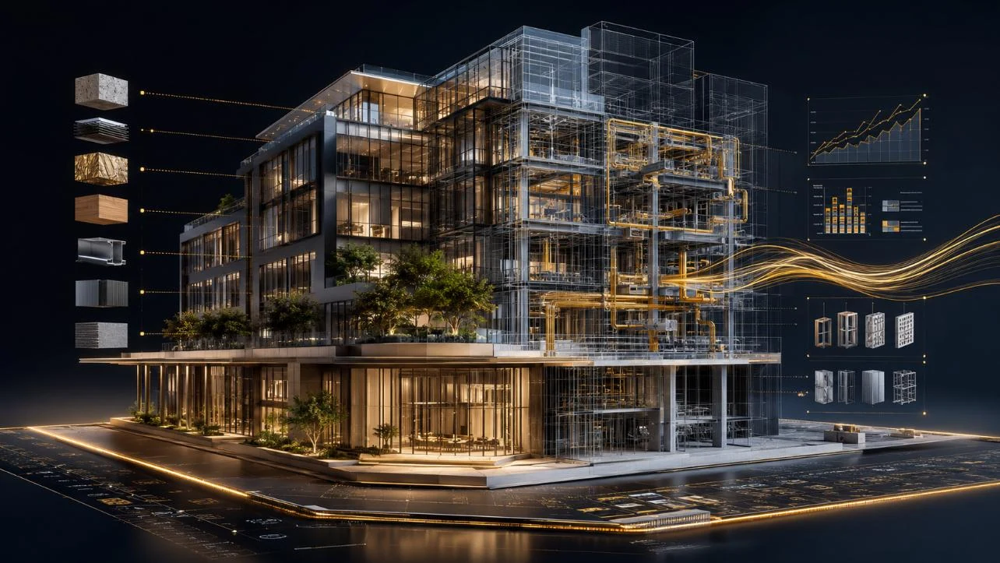
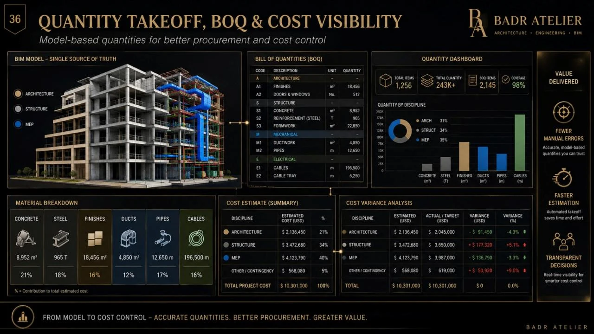
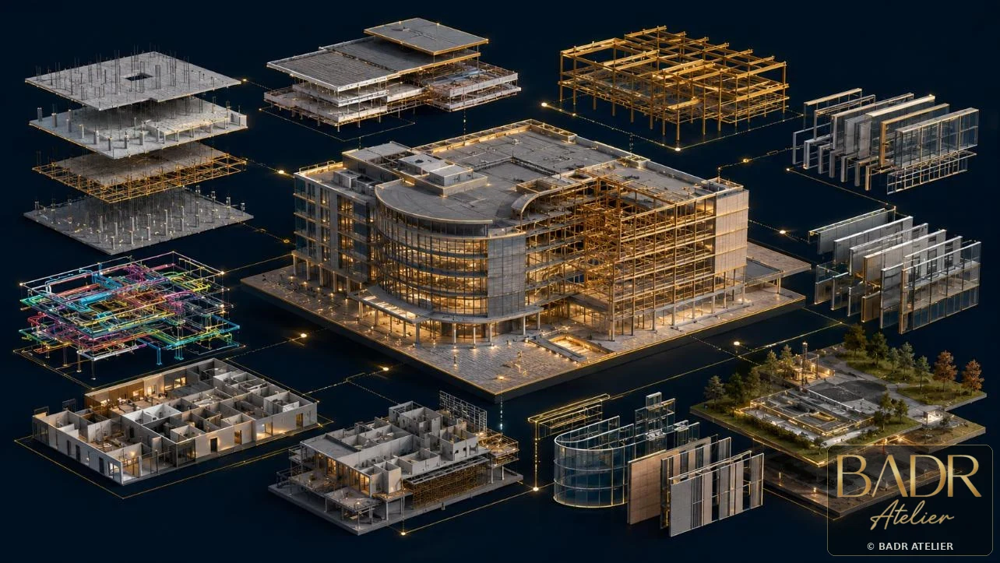
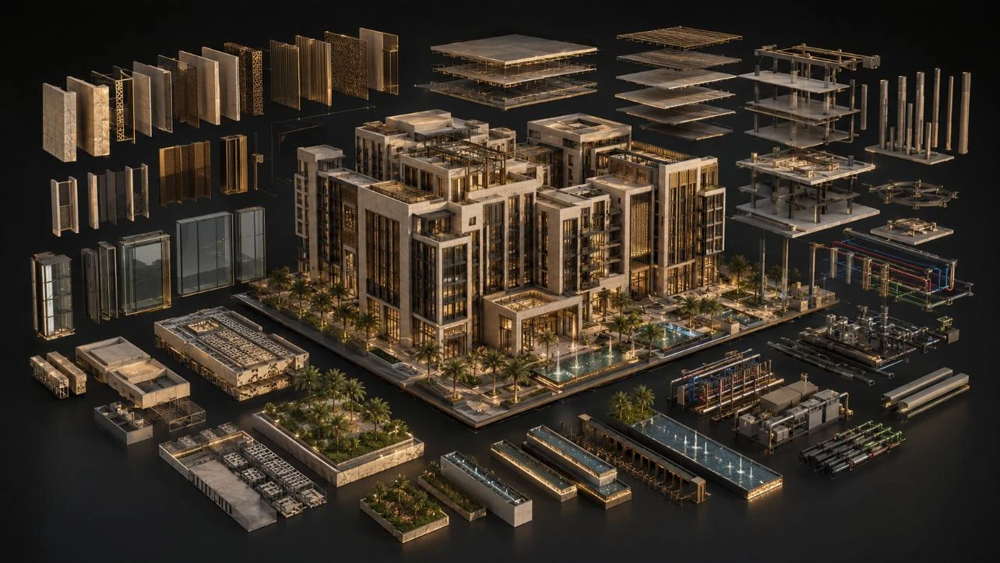
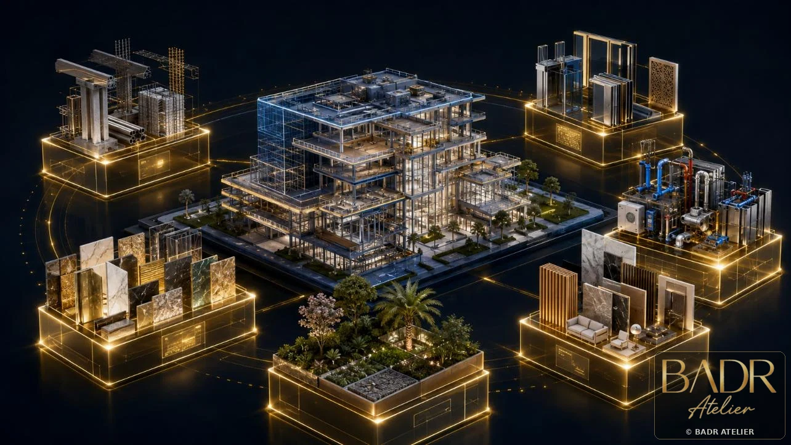
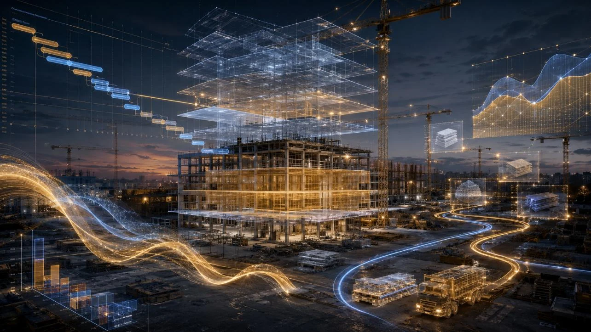
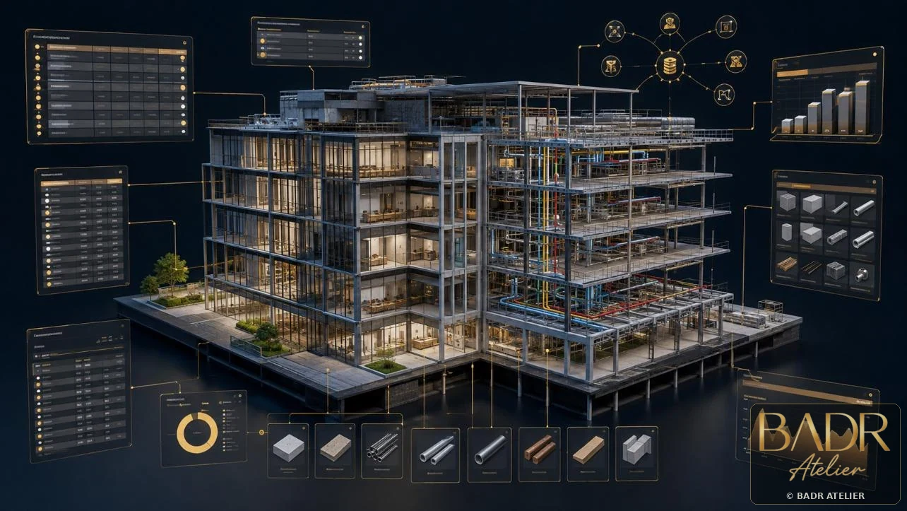
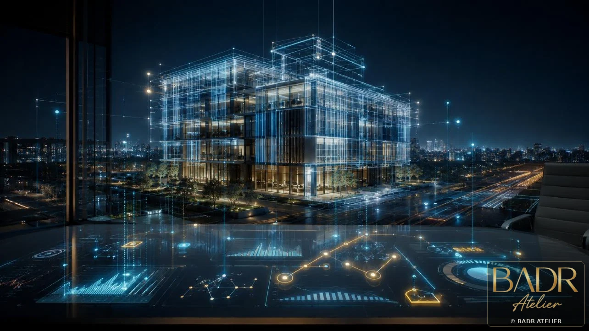

← Back to BIM + Digital
5D Cost Intelligence
From Model to Cost Control.
Make money part of the design conversation before change becomes expensive.
BADR connects model elements to measurable quantities, cost structures, procurement packages, change impact and executive commercial visibility.
5D Operating Logic
Model → Quantity → Cost → Procurement → Control
The objective is not a static estimate. It is a traceable information chain that can be reviewed, updated and explained as the design changes.
Cost by SystemCost by LocationChange ImpactProcurementCashflowLifecycle Data
5D Visual Portfolio
Cost Intelligence
Model-based commercial visibility curated for owners, developers and delivery teams.












